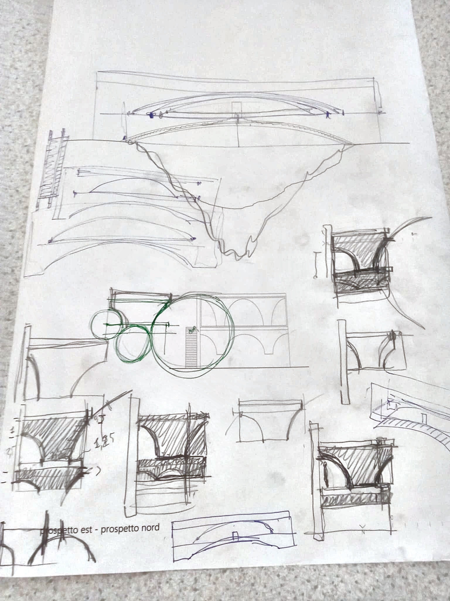
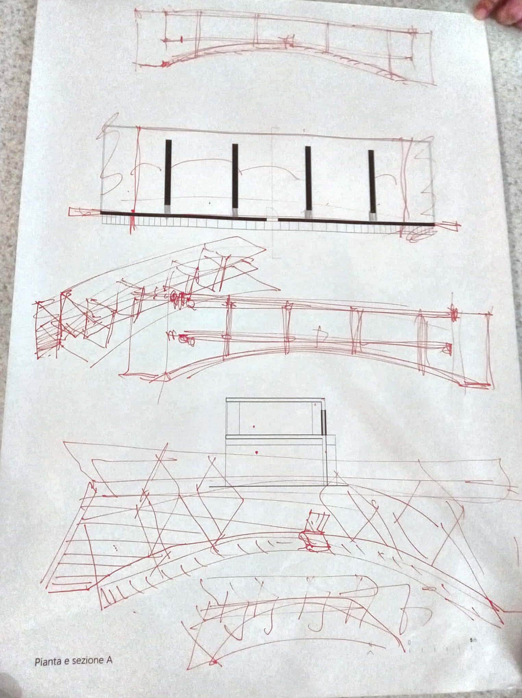
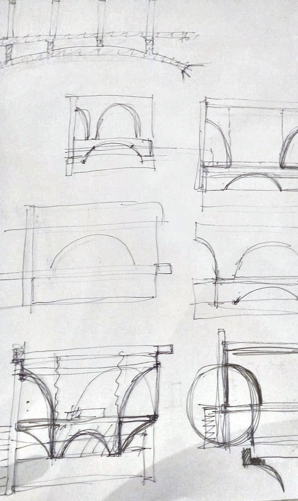
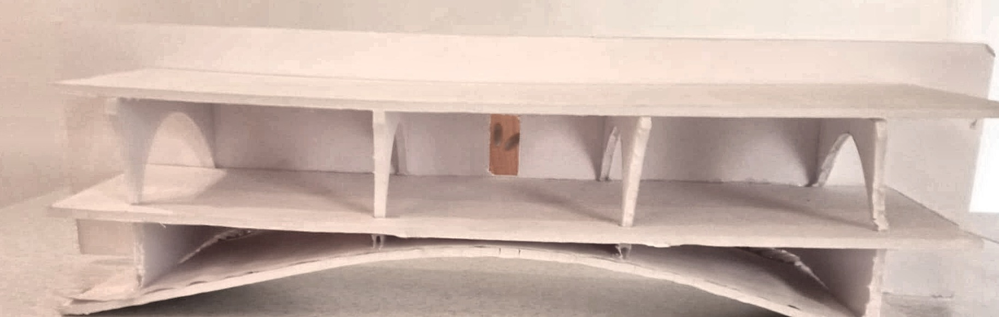
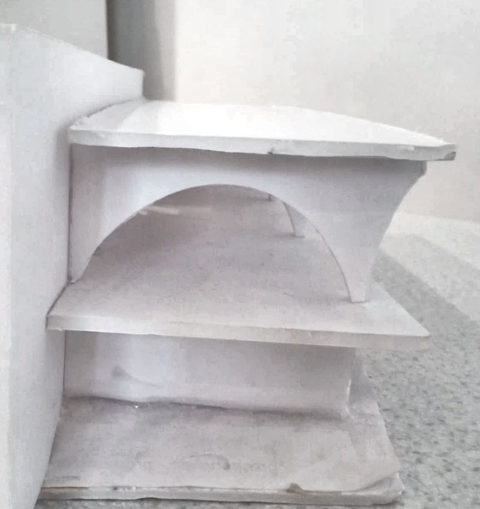
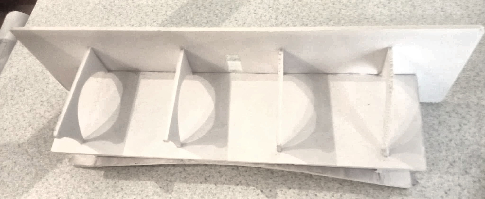
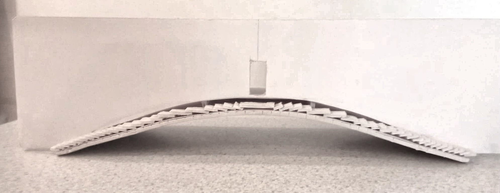

Concept
Il punto di partenza è stato lo studio della Casa del Puente di Amancio Williams: l'idea di una casa che non si limita ad affacciarsi sul paesaggio, ma lo attraversa fisicamente, usando la struttura portante come elemento architettonico primario.
La Casa del Puente, progettata da Amancio Williams negli anni '40, rimane un caso limite nella storia dell'architettura moderna: un'unica campata priva di appoggi intermedi, dove la struttura coincide con l'involucro abitativo. Da questo precedente non è stato ripreso il linguaggio formale — qui la struttura è in pietra, non in cemento a vista — ma il principio insediativo: la casa non si posa accanto all'acqua, la scavalca, e il momento dell'attraversamento diventa parte integrante dell'esperienza dello spazio.
Il riferimento agli acquedotti romani agisce invece sul piano costruttivo e percettivo: il ritmo degli archi in successione, la spinta scaricata a terra attraverso i piedritti, l'uso della pietra a vista come finitura strutturale e non decorativa. Sono elementi traslati alla scala domestica, dove un singolo arco sostituisce la sequenza di campate ma ne conserva la logica statica ed espressiva.
Gli schizzi e il modello di studio raccolti in questa pagina documentano come l'idea iniziale sia stata verificata e sviluppata, dalla proporzione dell'arco al suo comportamento strutturale sotto carico.
Schizzi e Diagrammi
Prospetti, piante/sezioni e studi di dettaglio realizzati a mano nella fase iniziale del progetto.



Modello di Studio
Plastico fisico realizzato per verificare le proporzioni e il comportamento strutturale della struttura ad arco.




Note di Concept
Alcuni aspetti del ragionamento progettuale approfonditi punto per punto.
Il ponte come soglia
La scelta di attraversare l'acqua, invece di limitarsi ad affacciarsi su di essa, trasforma l'ingresso in un rito di passaggio: si arriva alla casa solo dopo aver attraversato il vuoto sottostante, un gesto che richiama fisicamente l'attraversamento di un ponte romano.
Pietra e vetro, permanenza e leggerezza
Il contrasto tra il rivestimento in pietra a vista — materiale antico e massiccio — e le ampie vetrate strutturali racconta la tensione tra la solidità dell'arco, che deve reggere un carico, e la leggerezza degli spazi abitati che sorregge.
La luce come materiale
I render diurni e notturni non sono solo due varianti dello stesso progetto: raccontano due modi diversi di abitare la pietra. Di giorno assorbe la luce naturale, di notte viene scavata dalle luci verticali che ne accentuano texture e massa.